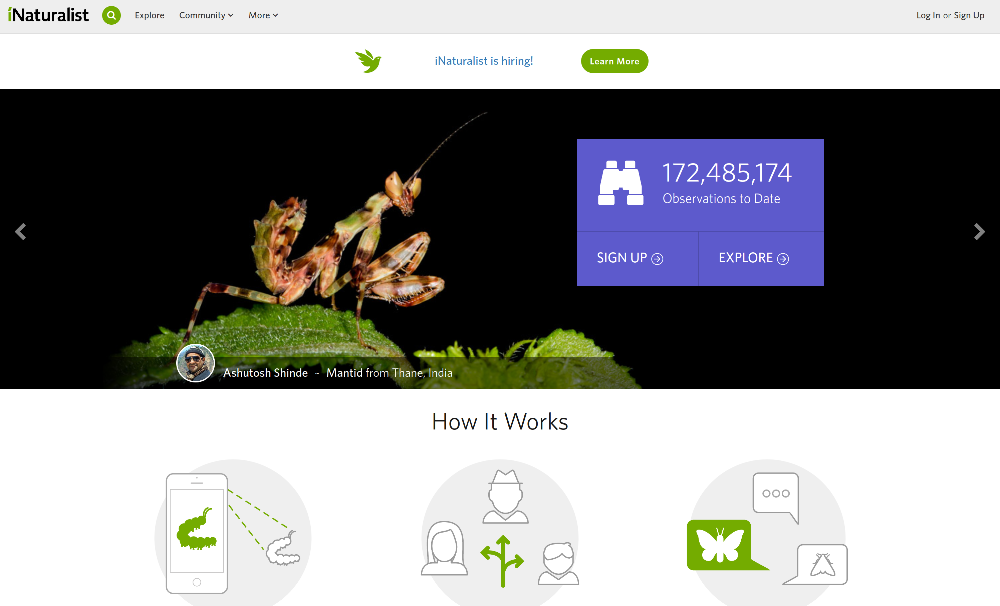
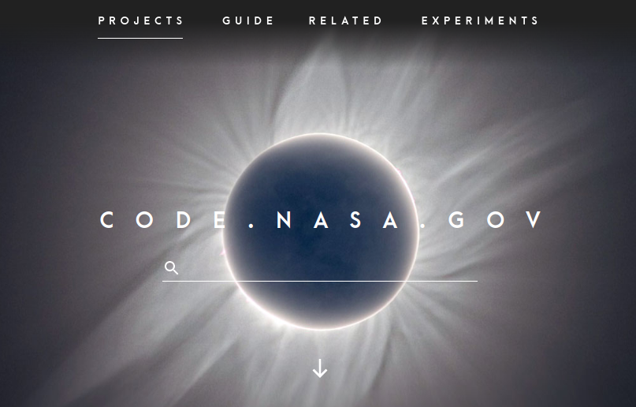

class: center, middle # CSCI-UA 480: OSSD <br> ## Open Source in the Public Service .author[ Instructor: Joanna Klukowska <br> ] .license[ Unless noted otherwise all content is released under [CC BY 4.0](https://creativecommons.org/licenses/by/4.0/). ] --- class: center, middle The following results were presented in the article [_Helping Others is the Highest Rated Career Value for Both Undergraduate and Graduate Students in Computing_](https://cra.org/crn/2018/11/helping-others-is-the-highest-rated-career-value-for-both-undergraduate-and-graduate-students-in-computing/) By: Burçin Tamer, Director of CERP, November 2018 <img src="img/help_others.png" width="800" > --- class: middle # Projects for the Public Good: <br> ### Humanitarian Free and Open Source Software (HFOSS) <br> ### Social Good Projects --- # Humanitarian Free and Open Source Software - [Humanitarian Free and Open Source Software](http://www.timreview.ca/article/399) by Chamindra de Silva, Dec. 2010 - __Humanitarian free and open source software (HFOSS)__ represents the application of free and open source software (FOSS) to the coordination of problems faced in the humanitarian and disaster-response domains. But it is also software related to: - Human rights - Advocacy - Development Cooperation - Assistive/Accessible Technologies - ... --- class: center, middle # Why is open source used in humanitarian projects? --- ## Open Source Alignment to Humanitarian Values (from [Humanitarian Free and Open Source Software](http://www.timreview.ca/article/399) by Chamindra de Silva) <img src="img/FOSS_alignment_with_humanitarian.png" width="650" > --- ## Open Source Alignment to Humanitarian Values, Continued (from [Humanitarian Free and Open Source Software](http://www.timreview.ca/article/399) by Chamindra de Silva) <img src="img/FOSS_alignment_with_humanitarian_2.png" width="650" > --- ## [Humanitarian OpenStreetMap Team](https://www.hotosm.org/) (HOT) _HOT is an international team dedicated to humanitarian action and community development through open mapping. We work together to provide map data which revolutionises disaster management, reduces risks, and contributes to achievement of the Sustainable Development Goals_ [more](https://www.hotosm.org/what-we-do) <img src="img/HumanitarianOpenStreetMap.png" width="550" > --- ## [Ushahidi](https://www.ushahidi.com/) (= "testimony" in Swahili) - Crowdmapping/Crisis-mapping application - Started in 2008 in Kenya to provide the public with real-time information about national elections - Now has thousands of deployments worldwide <img src="img/ushahidi.png" width="650" align="right"> --- class: center, middle # Social/Public Good Projects --- ## Healthcare .left-column2[ Opening the Loop. Autonomy, Access and Insulin <iframe width="300" src="https://www.youtube.com/embed/HEemD0HpY9Q" title="Opening the Loop: Autonomy, Access, and Insulin [Film]" frameborder="0" allow="accelerometer; autoplay; clipboard-write; encrypted-media; gyroscope; picture-in-picture; web-share" allowfullscreen></iframe> - access to one's data about their health (diabetes) (<a href="https://www.tidepool.org/">Tidepool</a>, <a href="https://openaps.org/">Open APS</a>, <a href="https://www.nightscoutfoundation.org/">The Nightscout Foudation</a> ) - giving people control over their own healthcare - production of life saving medication in an open way (Open Insulin Coundation) - _Life and death medications should not have a profit motive behind them._ ] .right-column2[ Healthcare Made Human <br/> <iframe width="300" src="https://www.youtube.com/embed/Usrm8xALXNI" title="Common Connections: Healthcare Made Human" frameborder="0" allow="accelerometer; autoplay; clipboard-write; encrypted-media; gyroscope; picture-in-picture; web-share" allowfullscreen></iframe> - <a href="https://www.opennotes.org/">OpenNotes project</a> - bringing awareness to people about access to their doctors' notes - getting better insight into one's own health ] --- ## Agriculture .left-column2[ Food Computer <iframe width="300" src="https://www.youtube.com/embed/Yzvvu1kM0Fg" title="A Food Computer in 60 Seconds" frameborder="0" allow="accelerometer; autoplay; clipboard-write; encrypted-media; gyroscope; picture-in-picture; web-share" allowfullscreen></iframe> - mini greenhouse controlled by a Raspberry Pie ] .right-column2[ Farming for the Future <iframe width="300" src="https://www.youtube.com/embed/3YoboO1HO6k" title="Open Source Stories: Farming for the Future" frameborder="0" allow="accelerometer; autoplay; clipboard-write; encrypted-media; gyroscope; picture-in-picture; web-share" allowfullscreen></iframe> - open source and open hardware used to control many everyday aspects at Wolfe's Neck Center for Agriculture and the Environment - sharing projects, data and experiences among farms improves results - high school students learning about agriculture - awareness about food insecurities around the world and potential solutions ] --- ## Education .left-column2[ Democratizing Knowledge in Higher Education <iframe width="300" src="https://www.youtube.com/embed/eB4MUWjozpM" title="Open Source Stories Talks: Democratizing knowledge in higher ed" frameborder="0" allow="accelerometer; autoplay; clipboard-write; encrypted-media; gyroscope; picture-in-picture; web-share" allowfullscreen></iframe> - <a href="https://openstax.org/">OpenStax</a> project at Rice University - easy of access, modification, adoption for textbooks ] .right-column2[ Cracking the Textbook <iframe width="300" src="https://www.youtube.com/embed/i-WS7Ih7XV4" title="Open Source Stories: Cracking the Textbook" frameborder="0" allow="accelerometer; autoplay; clipboard-write; encrypted-media; gyroscope; picture-in-picture; web-share" allowfullscreen></iframe> - open educational resources (OER) vs just a free PDF - digital customizable books as a way of making subjects more engaging - _Education is a fundamental humar right._ - _Education is a community enterprise. Everyone has something to teach nd everyone has something to learn._ ] --- ## Citizen Science .left-column2[ The Science of Collective Discovery <iframe width="300" src="https://www.youtube.com/embed/t1JW3HcU9bo" title="Open Source Stories: The Science of Collective Discovery" frameborder="0" allow="accelerometer; autoplay; clipboard-write; encrypted-media; gyroscope; picture-in-picture; web-share" allowfullscreen></iframe> - scientists working with _ordinary_ citizents - curiosity and concern as driving forces of discovery - Gowanus Canal and Gowanus Expressway initiatives ] .right-column2[ Open Data in Chile <iframe width="300" src="https://www.youtube.com/embed/_MIaJKKxGO0" title="Starting Small: Open Data in Chile" frameborder="0" allow="accelerometer; autoplay; clipboard-write; encrypted-media; gyroscope; picture-in-picture; web-share" allowfullscreen></iframe> - Pomaire - a small town of potters in Chile - oven polution directly affects citizen, but ovens are their livelyhood - involving people in research to improve their own health ] --- class: center, middle # Social/Public Good Projects ## Other Initiatives and Projects --- ## [Open MRS](https://openmrs.org/) <img src="img/OpenMRS.png" width="650" > <br><br> The world's leading open source Electronic Medical Records platform, sustained by a global community. --- .left-column2[ <br><br><br> The cBioPortal for Cancer Genomics provides visualization, analysis and download of large-scale cancer genomics data sets. The cBioPortal for Cancer Genomics was originally developed at Memorial Sloan Kettering Cancer Center (MSK). The public cBioPortal site is hosted by the Center for Molecular Oncology at MSK. The cBioPortal software is now available under an open source license via GitHub. The software is now developed and maintained by a multi-institutional team, consisting of MSK, the Dana Farber Cancer Institute, Princess Margaret Cancer Centre in Toronto, Children's Hospital of Philadelphia, The Hyve in the Netherlands, and Bilkent University in Ankara, Turkey. ] .right-column2[ ## [cBioPortal](https://www.cbioportal.org/) <br><br><br> <img src="img/cBioPortal.png" width="550" > ] --- ## [iNaturalist](https://www.inaturalist.org/)  <br><br> iNaturalist's mission is to connect people to nature and advance biodiversity science and conservation. --- ## [Open Energy Dashboard](https://openenergydashboard.github.io/) .right-column2[ <br><br> This project, also known as OED, is developing a web-based application to display energy information that is read and stored from energy meters. While the project involves a lot of technology, it is ultimately about sustainability and supporting those goals. The software is free and, as an open source project, you have access to the code developed and used. We welcome people becoming involved in the project or using this system on their own sites. If you want to see an example of a live system it is available at oed.beloit.edu/demo. Please use the links at the top of the page to get additional information. ] .left-column2[ <br><br> <img src="img/oed.png" width="420" > ] --- .left-column2[ [Dickinson’s College Farm](https://farmdata.dickinson.edu/guest.php) is a 80-acre, USDA-certified organic farm and a living laboratory where students can gain distinctive, hands-on learning experiences. Web-Based Mobile Database Applications to Support Organic Farming - __FarmData__: for entering and reporting crop production records, including seeding, transplanting, harvest, cover crop, compost, fertilization, irrigation, pest scouting, spray activities, packing and distribution records and customer invoicing. - __AnimalData__: for keeping livestock production records, from birth to slaughter or sale. Other data captured by the system includes pasture moves, periodic and veterinary care and logging of egg production. ] .right-column2[ <br><br> <img src="img/farm_data.png" width="350" > ] --- ## [FreeCodeCamp](https://www.freecodecamp.org/) Our mission: to help people learn to code for free. We accomplish this by creating thousands of videos, articles, and interactive coding lessons - all freely available to the public. We also have thousands of freeCodeCamp study groups around the world. <br><br> <img src="img/freeCodeCamp.png" width="750" > --- ## [Oppia](https://www.oppia.org/splash) .left-column2[ <img src="img/oppia.png" width="300" > ] Oppia's mission is to help anyone learn anything they want in an effective and enjoyable way. By creating a set of free, high-quality, demonstrably effective lessons with the help of educators from around the world, Oppia aims to provide students with quality education — regardless of where they are or what traditional resources they have access to. So far, educators have created more than 11,000 of these lessons, which we call explorations. And they serve almost 430,000 students worldwide. Explorations help students learn in a fun and creative way, using videos, images, and open-ended questions. And since students often have similar misconceptions, Oppia also provides educators the ability to address these misconceptions directly within explorations, empowering them to provide targeted feedback to multiple students at a time. --- ## [OpenFoodFacts](https://world.openfoodfacts.org/) <img src="img/open_food_facts.png" width="800" > --- ## [NASA Open Source](https://code.nasa.gov/) <center>  </center> NASA has used open source to address project and mission needs, to accelerate software development, and to maximize public awareness and impact of our research. The NASA Open Source Agreement (NOSA) is an Open Source Initiative (OSI) approved license to allow public release of NASA-funded software. Since 2003, we have released more than 60 software projects under the NOSA. Part of NASA’s charter (Space Act of 1958) is to “provide for the widest practical and appropriate dissemination of information concerning its activities and the results thereof.” Open source directly addresses this by facilitating rapid and wide dissemination of software with minimal overhead and cost. --- ## Other readings and resources - [Humanitarian Free and Open Source Software](http://www.timreview.ca/article/399) by Chamindra de Silva - [Open Source for Humanitarian Action](https://ssir.org/articles/entry/open_source_for_humanitarian_action) by Brandon Keim - [Open source job opportunities grow at crisis groups](https://opensource.com/article/17/3/crisis-solutions-humanitarian-open-source) by Kate Chapman - [11 ways to get involved with Humanitarian FOSS](https://opensource.com/life/15/2/getting-involved-hfoss) by Heather Leson ---